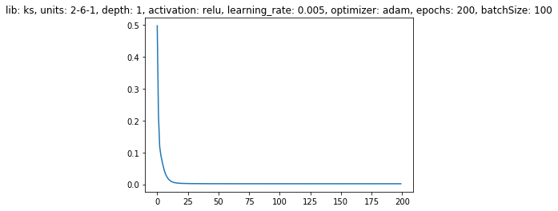
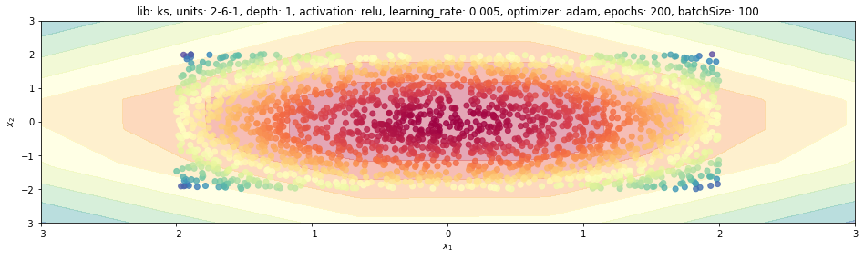
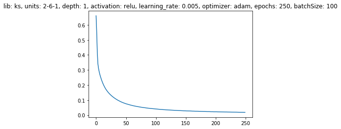
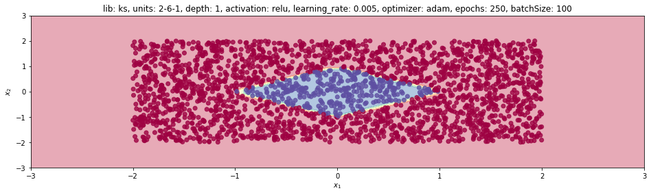

1. Introduction
This post belongs to a new series of posts related to a huge and popular topic in machine learning: fully connected neural networks.
The general series scope is three-fold:
- visualize the model features and characteristics with schematic pictures and charts
- learn to implement the model with different levels of abstraction, given by the framework used
- have some fun with one of the hottest topics right now!
In this new post, we are going to analyze how to train a neural network on toy examples with Keras. We are going through the following steps:
- training setting
- define the network architecture: dense layer, activation function and stack of layers
- train: loss and accuracy functions, optimizer and learning process
- visualize prediction
Point 2 implies to create a layer class with corresponding weights and biases that need to be learned during train step.
The whole code to create a synthetic dataset and learn a neural network model with any of the four libraries mentioned above is wrapped into a Python class, trainFCNN(), and can be found in my Github repo.
2. Installing and importing
First of all, we need to install this library with the pip command and to import the required package.

$ pip install numpy matplotlib keras tensorflow
import numpy as np
%matplotlib inline
import matplotlib.pyplot as plt
import tensorflow as tf
import keras as ks
from keras.models import Sequential
from keras.layers import Dense, Activation
from keras.optimizers import SGD, RMSprop, Adam
from keras.utils import np_utils
C:\Users\u21f73\anaconda3\lib\site-packages\h5py\__init__.py:36: FutureWarning: Conversion of the second argument of issubdtype from `float` to `np.floating` is deprecated. In future, it will be treated as `np.float64 == np.dtype(float).type`.
from ._conv import register_converters as _register_converters
Using TensorFlow backend.
3. Train function
Now we need to define the network itself with any of the four different libraries.
The functionalities and the process are created and handled within the train function.
We initialize the main parameters for this function as follows:
def train(self, nb_epochs=100, dims=[2], activation='sigmoid'):
self.LR = 0.005 # learning_rate
self.nb_epochs = nb_epochs
self.nb_batch = 100
self.activation = activation
self.nb_layer = len(self.dims)-1 # number of layers in the network with learnable parameters
dims helps us to define the dimensions of the number of units for every hidden layer.
This is a list of integers where each integer specifies the number of units for every hidden layer.
If we want to have 1-input layer, 3-hidden layer and 1-output layer neural network, then we can just feed a list of 3 integers, such as [2, 4, 4], because internally the code is going to also append one dimension for the input, whose number of units is fixed and equal to 2 for the two inputs only, and, at the end, one for the output, which can be either 1, if you have a regression or a binary classification, or the number of output layer units equal to the number of classes self.nb_class, if we have multi-class problem.
Just recall that, if we have a binary problem, we just need to output the probability of the input to belong to one of the two classes, that’s why we only need one output!
self.dims = [2] + dims + [self.nb_class if self.kind=='multiCls' else 1]
We want to differentiate the activation function for the output layer self.lastActFun.
For regression that has to be a linear activation, since we just need to take the dense layer output and use it as the response variable.
We need a sigmoid function for a binary classification because we want to squeeze the dense layer output to 0-1 range and that is going to represent the probability of the input to belong to any of the two classes.
In the last case, a multi-class problem, we need a softmax function for the last layer.
self.lastActFun = 'sigmoid' if self.kind == 'binCls' else 'softmax' if self.kind == 'multiCls' else 'linear'
4. Building and training the model with Keras
Now we move to Keras!
Since Keras is also a high-level library, it is going to be a bit more verbose than Sklearn but still quite comfortable.
We need to build the model structure first and we are going to use sequential().
Basically, a feed-forward network is just a sequential process of the input as many times as many layers we do have.
sequential() is a method to stack different layers.
That’s why we need to initiate the model instance using it.
The dense creation process is handled within a for-loop repeated as many layers nb_layer we need to stack.
But we treat the last layer in a different way.
so whenever the output is not the last one, the activation function is just what the user specified into the train function.
Otherwise, we’re going to use either a linear if your regression problem or sigmoid for binary or softmax for multi-class as activation function, which has already been identified according to the problem to solve and stored into self.lastActFun.
Here you can see that this kind of understanding was not necessary for Sklearn so you just need to specify the attribute for the hidden layers but a Sklearn is going to understand which activation is required for the last output automatically.
After that we just need to use the dense object Dense() and we need to specify units as the number of output units and input_dim as the input dimension.
By default we just need to give the input dimension only for the first dense layer.
Afterwards, Keras is able to automatically determine that the input dimension of the new dense layer is going to have the units of the previous dense layer.
But here we want to have control of the dense creation process within a for loop, so we specify the input dimension for each layer.
We specify that bias has to be initialized as zeros using the attribute bias_initializer="zeros" and we make use of random uniform generation process for weights with kernel_initializer="random_uniform".
At the end of this for-loop, we can visualize the structure using the summary attribute.
mdl = Sequential() # model initialization
for kk in range(self.nb_layer):
actFun = self.activation if kk<self.nb_layer-1 else self.lastActFun
mdl.add(Dense(units=self.dims[kk+1], input_dim=self.dims[kk], activation=actFun,\
kernel_initializer="random_uniform", bias_initializer="zeros"))
if self.display: print(mdl.summary()) # Print out the network configuration
We specify the optimizer optimizer that we need to use to get the optimal set of parameters, the loss function and the metric metrics.
loss is going to be the function that Keras uses to find the optimal weights.
So optimal is relative to this function.
metrics instead is what we are going to use to assess the model at the end.
optimizer is just the optimizer itself. It could be Adam, SGD or anything else available in Keras.
Here you can find the full list of optimizers.
Please remember that if you want to specify the learning rate in Keras you have to specify it as an attribute to the optimizer itself that you’re going to feed to the compile function.
if self.opt=='sgd':
optimizer = SGD(lr=self.LR)
elif self.opt=='adam':
optimizer = Adam(lr=self.LR)
elif self.opt=='rmsprop':
optimizer = RMSprop(lr=self.LR)
elif self.opt=='adagrad':
optimizer = Adagrad(lr=self.LR)
if self.kind == 'regr':
mdl.compile(loss='mse', optimizer=optimizer, metrics=['mse'])
elif self.kind == 'binCls':
mdl.compile(loss="binary_crossentropy", optimizer=optimizer, metrics=["accuracy"])
elif self.kind == 'multiCls':
mdl.compile(loss="categorical_crossentropy", optimizer=optimizer, metrics=["accuracy"])
else:
pass
A critical remark!
We define the loss for regression as mse to minimize the mean square error of the output with respect to the actual output.
The structure of Y is going to be (nb_pnt, 1), where nb_pnt is the number of samples, and the only column is used for the output.
In the second case, we have a binary classification, so loss is going to be the binary cross-entropy (in this post, we saw what cross-entropy means) and Y structure is still (nb_pnt, 1) because we do only have one output.
But in the last case, the multi-class problem multiCls, we have two options for categorical cross-entropy:
sparse_categorical_crossentropy: initially we generate theYvariable as(nb_pnt, 1), with one column for the class integer. We can solve the problem in Keras using this loss function definition without changing the structure ofYoutput.categorical_crossentropy: the other option is to convert the integer representation ofYoutput into a one-hot encoding. If we have 5 classes then we end up withYbeing(nb_pnt, 5).
Here you can find an example of converting integer representation to the corresponding one-hot encoding.
| Integer | One-hot |
|---|---|
| 2 | [0, 0, 1, 0, 0] |
| 1 | [0, 1, 0, 0, 0] |
| 0 | [1, 0, 0, 0, 0] |
| 3 | [0, 0, 0, 1, 0] |
| 1 | [0, 1, 0, 0, 0] |
| 5 | [0, 0, 0, 0, 1] |
To summarize, if we use this one-hot encoding, then the loss is categorical cross-entropy.
Otherwise, it has to be sparse categorical cross-entropy.
Here is the code to transform the response variable YY into one-hot encoding representation YYohe.
YYohe = np_utils.to_categorical(YY, num_classes=self.nb_class)
This is actually applied within toOneHotEncoding() if the problem is multi-class.
YY = self.toOneHotEncoding(self.YY)
history = mdl.fit(self.XX, YY, epochs=self.nb_epochs, batch_size=self.nb_batch, verbose=0)
Now we just go to the next step, where the actual training and learning process is going to happen.
It is the fit() method, as it happened for Sklearn.
We feed X input, Y output, specify number of epochs nb_epochs and of batches nb_batch and whether we want Keras to show how the training process is going to evolve verbose=1.
This is useful for instance if the process is super slow and we need to monitor it from time to time by checking what is the current status, what is the current loss and what is the current accuracy of the model.
But in our case we are just solving a super-fast toy problem, so we don’t need that (verbose=0)!
(loss, accuracy) = mdl.evaluate(self.XX, YY, verbose=1)
print("[INFO] loss={:.4f}, accuracy: {:.4f}%".format(loss, accuracy * 100))
if self.kind == 'multiCls':
Ygrd = np.argmax(mdl.predict(self.XXgrd), axis=1)
else:
Ygrd = mdl.predict(self.XXgrd)
At the end of the process, we can evaluate the model by using evaluate and get the final loss and accuracy.
Also, we need to predict the model behaviour for the input grid.
We’re going to apply predict() to the XXgrd input.
But if we do have a multi-class problem then the output is going to be a 2D array, while we need a 1D array with the model prediction for each input.
This 2D structure is required to return the probability distribution of every input to belong to any of the classes.
We take the column index where we do the highest probability for that input.
We apply the argmax() function column-wise by using the additional attribute axis=1.
It means that if we take the output of predict() with respect to the input grid XXgrd, we do have (nb_pnt, nb_class) output, where nb_class is the number of different classes.
How should we interpret that?
If we take one row from a nb_class=4 problem, then we could have a row array such as [.15, .1, .7, .05].
This array is just the probability of the input to belong to any of those 4 classes.
For the $n$-classes case, we end up with the probability distribution across $n$ classes.
The predicted class from our model is the class/column with the highest probability, which is the third class in the above nb_class=4 problem.
That’s why we need to use argmax().
self.nn_Ygrd = Ygrd
self.lossHistory = history.history['loss']
Finally, we save the output of the fit method into history and select one of the attributes, the dictionary history.history, and retrieve the loss history by using the loss key.
5. Visualize some results
5.1 NN model with a regression problem
We visualize the loss history and the model prediction throughout the 2D grid for a regression problem (the sum of squared terms).
tnn = trainFCNN(nb_pnt=2500, dataset='sumSquares')
tnn.train(lib='ks', dims=[6], activation='relu', nb_epochs=200, lr=0.005)
plt.plot(tnn.lossHistory)
plt.title(tnn.mdlDescription());

tnn.plotModelEstimate(figsize=(16, 9))

5.2 NN model with binary classification
We visualize the loss history and the model prediction throughout the 2D grid for the square problem (binary-classification).
tnn = trainFCNN(nb_pnt=2500, dataset='square')
tnn.train(lib='ks', dims=[6], activation='relu', nb_epochs=250, lr=0.005)
plt.plot(tnn.lossHistory)
plt.title(tnn.mdlDescription());

tnn.plotModelEstimate(figsize=(16, 9))
